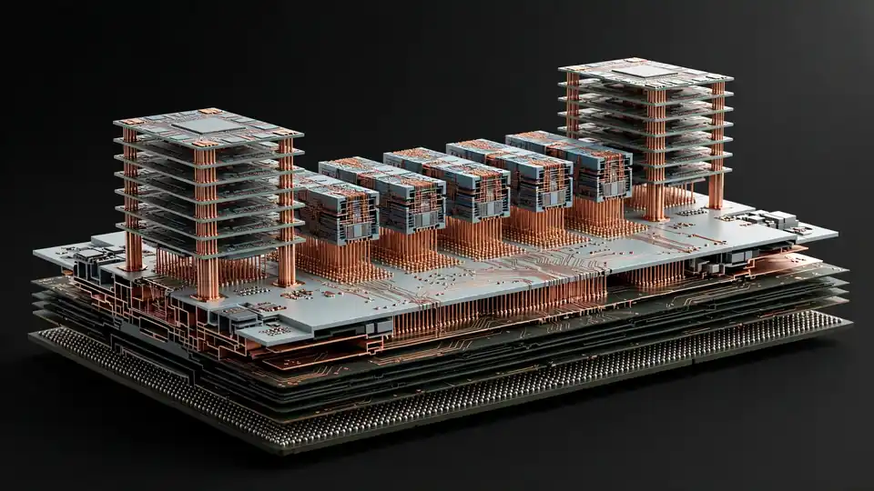

Microsoft bets its AI future on its own silicon: Maia 300 targets 40% more tokens per megawatt, over a million chips in 2027
Microsoft unveiled its third-generation in-house AI chip, the Maia 300, on Monday and said the Maia family will become the primary inference system across its products and services, scaling to multi-gigawatt deployments starting in 2027.
- Microsoft unveiled the Maia 300, its third-generation in-house AI chip, in an Official Microsoft Blog post by Cloud + AI chief Scott Guthrie; Nadella called it "our biggest bet yet on our own silicon."
- Microsoft expects 40% more tokens per megawatt than leading GPU-based systems; a 96-accelerator configuration delivers up to 7x the rack-scale token throughput of the Maia 200.
- Each chip carries eight HBM4 stacks (18.0 TB/s peak bandwidth) in a 950-watt TDP; compute chiplets are built on TSMC's N2P process. A rack holds 96 accelerators in a 167-kilowatt envelope with 27.6 TB of HBM and 1.7 PB/s aggregate bandwidth.
- The Maia 200 (announced January 2026) already serves production workloads across the US, Europe and Australia, running OpenAI models, MAI models and open-source families on Copilot.
- Reuters reports Microsoft plans to deploy potentially more than one million Maia 300 chips in 2027; production deployments begin in 2027, with more detail at Ignite in San Francisco.
- Guthrie said Microsoft remains a big Nvidia and AMD partner — Maia is an inference architecture, not an Nvidia exit.
Microsoft's Cloud + AI chief Scott Guthrie announced the chip in an Official Microsoft Blog post today. The post says Microsoft will scale the Azure Maia family to multi-gigawatt deployments starting in 2027, making Maia “the primary inference system for Microsoft products and services.” CEO Satya Nadella called it “our biggest bet yet on our own silicon” in a post on X, GeekWire reports.
The numbers are aimed squarely at inference economics. Maia 300 is a “complete intelligent system” designed for long-context reasoning, latency-sensitive conversational experiences, and sustained multi-step agentic tasks. Microsoft expects it to deliver 40% more tokens per megawatt than leading GPU-based systems, and says a full 96-accelerator configuration delivers up to 7x the rack-scale token throughput of its predecessor, the Maia 200. Each chip carries eight HBM4 memory stacks with 18.0 TB/s of peak bandwidth inside a 950-watt TDP, and its compute chiplets are built on TSMC's N2P process node, with compute, memory-controller, and I/O functions separated onto different silicon. Racks pack 96 accelerators into a 167-kilowatt envelope with 27.6 TB of HBM and 1.7 PB/s of aggregate bandwidth.
The groundwork is already in production
Maia 300 arrives as a fast follow: the Maia 200 was only announced in January 2026 and is already serving Microsoft production workloads across the United States, Europe, and Australia. It runs OpenAI models, Microsoft's own MAI models, and leading open-source families on Microsoft Copilot, with GitHub Copilot and Microsoft Foundry to follow by the end of this year. Microsoft claims the Maia 200 delivers up to 1.7x more tokens per watt than leading GPU infrastructure for built-in AI features in Teams, Copilot, and Cowork. Reuters reports Microsoft plans to deploy potentially more than one million Maia 300 chips next year to back its internal AI services. Maia 300's production deployments begin in 2027, with more detail expected at Ignite in San Francisco next month.

Not a Nvidia breakup
Microsoft is positioning Maia as an inference architecture, not a wholesale Nvidia exit. Guthrie told the Key Context newsletter on October 12 that Microsoft will continue to be a big partner of Nvidia and AMD — and that the company is ordering a lot of Maia 300 chips. Nadella said on the July earnings call that Microsoft will be among the first cloud providers to deploy systems based on Nvidia's Vera Rubin and AMD's Helios, and last week he shared a stage with Jensen Huang to launch Windows PCs built on Nvidia chips.
Why it matters
Every point of efficiency off the inference bill matters when power — not chips — is the binding constraint on AI expansion, and Microsoft just put its own silicon at the center of that math. If Maia 300's numbers hold in production, the savings flow straight into Copilot economics; if not, a million-plus chips is an expensive lesson. Either way, the hyperscaler vertical-integration race — Google's TPUs, Amazon's Trainium, now Maia's third generation — just got a little tighter around Nvidia's margins.
Frequently asked questions
What performance does Microsoft claim for the Maia 300?
Microsoft expects 40% more tokens per megawatt than leading GPU-based systems, and says a full 96-accelerator rack delivers up to 7x the rack-scale token throughput of its predecessor, the Maia 200. Each chip carries eight HBM4 stacks with 18.0 TB/s peak bandwidth inside a 950-watt TDP.
When will Maia 300 ship, and at what scale?
Production deployments begin in 2027, scaling to multi-gigawatt deployments. Reuters reports Microsoft plans to deploy potentially more than one million Maia 300 chips next year; more detail is expected at Ignite in San Francisco next month.
Is Microsoft breaking up with Nvidia?
No. Cloud + AI chief Scott Guthrie told the Key Context newsletter that Microsoft will continue to be a big partner of Nvidia and AMD — Maia is positioned as an inference architecture, not a wholesale Nvidia exit.
What is the Maia 200 doing today?
Announced in January 2026, it is already serving Microsoft production workloads across the US, Europe and Australia, running OpenAI models, Microsoft's own MAI models and leading open-source families on Copilot, with GitHub Copilot and Microsoft Foundry to follow by year-end.